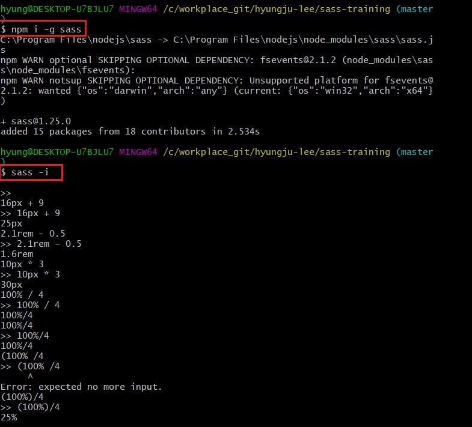
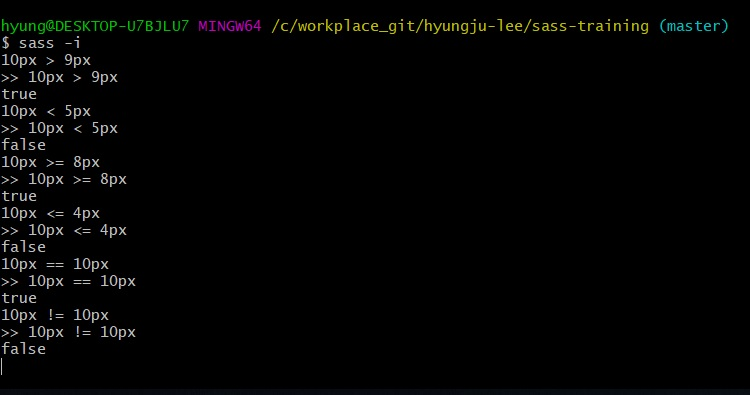
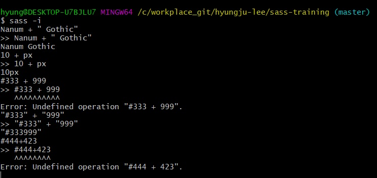

Sass 언어는 자바스크립트와 같은 사칙연산(+, -, *, /), 비교연산(<, >, ==, >=, <=, !=), 문자 접합 등을 지원합니다.
다시 말해, 값을 더하거나 빼거나 곱하거나 나눌 수 있으며, 값을 서로 비교할 수도 있습니다.
또 나눈 문자를 변수를 활용하여 연산 결과에 따라 접합할 수도 있습니다.
Git Bash에서 sass -i 명령어를 실행하면 sass 언어를 인터랙티브(interactive)하게 Git Bash에서 실행하고 결과를 확인할 수 있습니다.
주의할 점은 나눗셈(/)을 할 때 단위가 붙은 값은 괄호로 묶어야 정상적으로 연산이 처리됩니다.
px에서 %를 빼는 것처럼, 단위가 다르면 연산이 처리되지 않습니다.

다음 사진처럼 각 값을 비교하는 연산도 잘 처리합니다.
== 연산은 두 값이 같은지 비교하고, != 연산은 두 값이 다른지 비교합니다.

문자열을 접합할 수도 있습니다.
다음을 보면 자바스크립트 결과와 유사합니다.
한가지 주의할 점은 색상 데이터 값을 나눈 후 접합할 때는 따옴표가 필요합니다.

연산된 결과를 그대로 사용하기보다는 조건문(@if), 반복문(@for, @while, @each)과 함께 사용해야 유용합니다.
이 부분은 조건문과 반복문을 배울 때 좀 더 자세히 다루겠습니다.
깨알 Tip
Sass 인터랙티브 모드 연산을 끝낼 때는 ctrl + c 를 누릅니다.